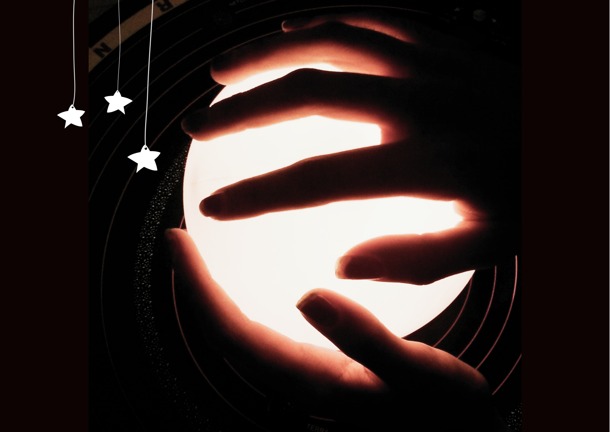
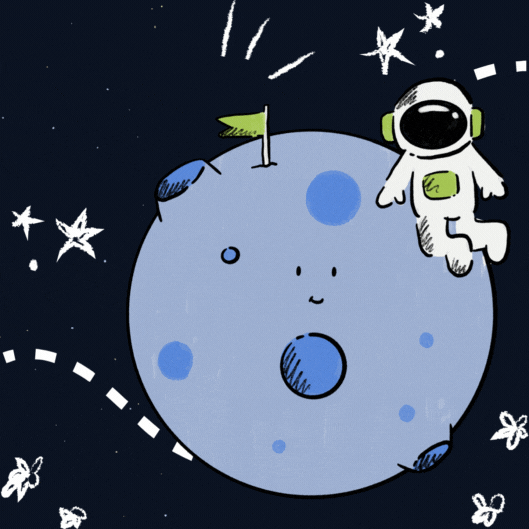
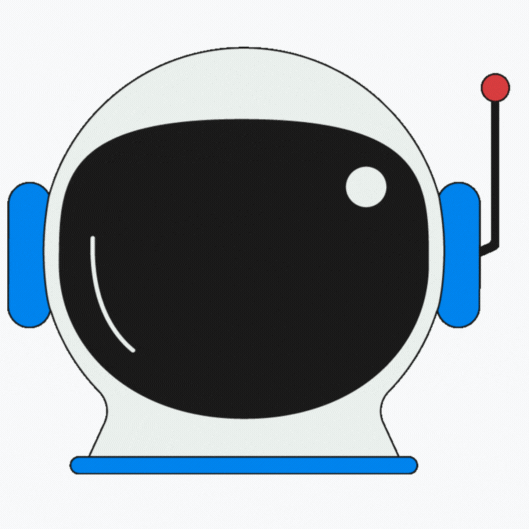

"Há um único recanto do universo que podemos ter certeza de melhorar: o nosso
próprio eu."
Aldous Huxley
"Quando uma criatura humana desperta para um grande sonho e sobre ele lança toda
a força de sua alma, todo o universo conspira a seu favor."
Johann Goethe

Que tamanho tem o universo?
O universo tem o tamanho do seu mundo.
Que tamanho tem o meu mundo?
Tem o tamanho dos seus sonhos.
Augusto Cury

Sobre mim
"Meu objetivo é simples. É ter uma compreensão completa do universo, por que ele é como é e por que
existe."
Stephen Hawking

Hey!
Conheça um pouco mais sobre meu universo particular e minhas principais
Habilidades, embarcando
nessa jornada, para ter compreensão completa sobre minha vida profissional
através do meu currículo!
Universidade Estadual do Ceará, Fortaleza — Superior
2020 - em andamento
Bacharelado em Ciência da computação
Soft Skills
Criatividade
Adaptabilidade
Escrita
Hard Skills
Bootstrap
Css
Html
Figma
Ux/Ui design
Angular
PHP
PostgreSQL
Python
Docker
Descubra um pouco das minhas vivências como desenvolvedora,
Ux designer e suporte à docência.
Laboratório de Computação Científica, Fortaleza — Bolsista
de
iniciação
científica
DESDE AGOSTO DE 2021 ATÉ AGOSTO DE 2022
Realizei Geoprocessamento de dados utilizando o software QGIS.
Empresa de Tecnologia da Informação do Ceará, Fortaleza —
Estagiário
DESDE OUTUBRO DE 2022 ATÉ AGOSTO DE 2023
Realizei manutenção, implementação e liderança da equipe de
frontend
do sistema web da empresa. Além de
prototipagem de telas com base em princípios de UI/UX design,
implementando elas utilizando Bootstrap e
React-Bootstrap. Também fazia atividades de backend, utilizando
PHP,
JS e SQL, com foco no gerenciamento de
banco de dados PostgreSQL
Grupo de Engenharia de Software e Sistemas Distribuídos-
GESAD,
Fortaleza — Voluntária
DESDE MARÇO DE 2023
Elaboro interfaces gráficas, desde o levantamento de requisitos
até
a implementação do front-end, utilizando
Angular e ferramentas como o Figma
Dell Brasil, Fortaleza — Desenvolvedor(a) frontend
DESDE AGOSTO DE 2023
implementava telas utilizando o framework Angular, fazendo uso
também de TypeScript, Git e JavaScript, seguindo
princípios de metodologias ágeis como Scrum para a realização
das
atividades propostas.
Universidade estadual do ceará - Monitoria em Banco de dados
DESDE MARÇO DE 2024
Presto apoio aos alunos, esclarecendo dúvidas, oferecendo
explicações extras, auxiliando na resolução de
exercícios, revisando o material de estudo e criando materiais
didáticos suplementares. Além disso, participo na
organização de atividades práticas, visando aprimorar a
compreensão
dos alunos e incentivar um ambiente de
aprendizado mais cooperativo e eficiente.
Quem sou eu?
Profissional apaixonada por UX Design e Desenvolvimento Frontend, com mais de 1 ano
de experiência acadêmica e profissional. Especializada em criar experiências
digitais centradas no usuário, através de interfaces intuitivas e funcionais.
Utilizo pesquisa de usuário e design thinking para garantir alta qualidade em cada
produto digital. Habilidosa em ferramentas como Figma e Canva, e em Frameworks como
Angular e Bootstrap. Demonstrei colaboração eficaz em metodologias ágeis como Scrum,
traduzindo requisitos em soluções inovadoras. Mantenho-me sempre atualizada com as
últimas tendências da indústria e busco oportunidades desafiadoras para contribuir
com minha expertise no sucesso do produto e da empresa.
.png)